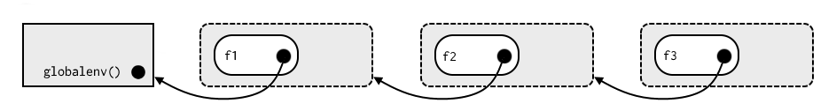
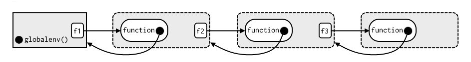

5 Environments
5.1 Environment basics
- Q: List three ways in which an environment differs from a list.
A: The most important differences are:- environments have reference semantics
- environments have parents
- environments are not ordered
- elements of environments need to be (uniquely) named
Q: If you don’t supply an explicit environment, where do
ls()andrm()look? Where does<-make bindings? The
A:ls()andrmlook in their calling environments which they find byas.environment(-1).
From the book:Assignment is the act of binding (or rebinding) a name to a value in an environment.
From
?`<-`:The operators
<-and=assign into the environment in which they are evaluated. The operator<-can be used anywhere, whereas the operator=is only allowed at the top level (e.g., in the complete expression typed at the command prompt) or as one of the subexpressions in a braced list of expressions.Q: Using
parent.env()and a loop (or a recursive function), verify that the ancestors ofglobalenv()includebaseenv()andemptyenv(). Use the same basic idea to implement your own version ofsearch().
A: We can print the ancestors for example by using a recursive function:ancestors <- function(env = globalenv()){ if (identical(env, emptyenv())) { print(environmentName(env))} else { print(environmentName(env)) ancestors(parent.env(env)) } } ancestors() #> [1] "R_GlobalEnv" #> [1] "package:stats" #> [1] "package:graphics" #> [1] "package:grDevices" #> [1] "package:utils" #> [1] "package:datasets" #> [1] "Autoloads" #> [1] "base" #> [1] "R_EmptyEnv"To implement a new version of
search()we use a while statement:search2 <- function(env = globalenv()){ envs <- character() while (!identical(env, emptyenv())) { ename <- environmentName(env) if (ename == "base") ename <- "package:base" if (ename == "R_GlobalEnv") ename <- ".GlobalEnv" envs <- c(envs, ename) env <- parent.env(env) } return(envs) } search2() #> [1] ".GlobalEnv" "package:stats" "package:graphics" #> [4] "package:grDevices" "package:utils" "package:datasets" #> [7] "Autoloads" "package:base" # visual check that results are identical to the original search() function search() #> [1] ".GlobalEnv" "package:stats" "package:graphics" #> [4] "package:grDevices" "package:utils" "package:datasets" #> [7] "Autoloads" "package:base"
5.2 Recursing over environments
Q: Modify
where()to find all environments that contain a binding forname.
A: We look at the source code of the originalpryr::where():pryr::where function (name, env = parent.frame()) { stopifnot(is.character(name), length(name) == 1) env <- to_env(env) if (identical(env, emptyenv())) { # "base case" stop("Can't find ", name, call. = FALSE) } if (exists(name, env, inherits = FALSE)) { # "success case" env } else { # "recursive case" where(name, parent.env(env)) # we will copy this line in the success case } }Since
where()stops searching when a match appears, we copy the recursive call in theelseblock to the block of the matching (“success”) case, so that our new functionwhere2will look for a binding within the complete search path. We also need to pay attention to other details. We have to take care to save the bindings in an object, while not overriding it in our recursive calls. So we create a list object for that and define a new function withinwhere2()that we callwhere2.internal.where2.internal()will do the recursive work and whenever it finds a binding it will write it via<<-to the especially created list in its enclosing environment:where2 <- function(name, env = parent.frame()){ # we need to collect all environments where name has a binding env_list <- list() # since our function will be recursive and env_list would be overwritten # when it is inside the recursive function, we put it on the outside of # the recursive function and concatenate every binding environment # that we find via the `<<-` operator on its end. # In the following we start by defining the recursive function: where2.internal <- function(name, env = parent.frame()) { stopifnot(is.character(name), length(name) == 1) env <- pryr:::to_env(env) # note that we need to call to_env via pryr::: # when we reach the empty environment, we return all binding environments # (if we found some) if we found no bindings, we give the same error message # as pryr::where does if (identical(env, emptyenv())) { if (length(env_list) != 0){ return(env_list) } stop("Can't find ", name, call. = FALSE) } if (exists(name, env, inherits = FALSE)) { # this is a case where we find a binding. the main difference to # pryr::where is that we don't return immediately. Instead we save # the binding environment to env_list and call where2.internal again env_list <<- c(env_list, env) where2.internal(name, parent.env(env)) } else { where2.internal(name, parent.env(env)) } } # as a last step we just call where2.internal() to start the recursion where2.internal(name, env = parent.frame()) }Note that
where2.internal()still provides the same structure aspryr::wheredoes and you can also divide it in “base case”, “success case” and “recursive case”.Q: Write your own version of
get()using a function written in the style ofwhere().
A: Note thatget()provides a bit more arguments than our following version, but it should be easy to build up on that. However, we can changepryr::wheretoget2()with just changing one line of code (and the function name for the recursive call):get2 <- function(name, env = parent.frame()) { stopifnot(is.character(name), length(name) == 1) env <- pryr:::to_env(env) if (identical(env, emptyenv())) { stop("Can't find ", name, call. = FALSE) } if (exists(name, env, inherits = FALSE)) { # we cancel env and substitute it with the following line, where we subset # the environment (like a list) by the name of our object and return it return(env[[name]]) } else { get2(name, parent.env(env)) } }Q: Write a function called
fget()that finds only function objects. It should have two arguments,nameandenv, and should obey the regular scoping rules for functions: if there’s an object with a matching name that’s not a function, look in the parent. For an added challenge, also add aninheritsargument which controls whether the function recurses up the parents or only looks in one environment.
A: We can build up our function on the implementation ofget2()in the last exercise. We only need to add a check viais.function(), change the name (also in the recursive call) and the error message:fget2 <- function(name, env = parent.frame()){ stopifnot(is.character(name), length(name) == 1) env <- pryr:::to_env(env) if (identical(env, emptyenv())) { stop("Could not find function called ", name, call. = FALSE) # } # here we add the is.function() check if (exists(name, env, inherits = FALSE) && is.function(env[[name]])) { return(env[[name]]) } else { fget2(name, parent.env(env)) } }Note that this function is almost the same as the implementation of
pryr::fget():pryr::fget #> function (name, env = parent.frame()) #> { #> env <- to_env(env) #> if (identical(env, emptyenv())) { #> stop("Could not find function called ", name, call. = FALSE) #> } #> if (exists(name, env, inherits = FALSE) && is.function(env[[name]])) { #> env[[name]] #> } #> else { #> fget(name, parent.env(env)) #> } #> } #> <environment: namespace:pryr>We add an
inheritsparameter as described in the exercise:fget3 <- function(name, env = parent.frame(), inherits = TRUE){ stopifnot(is.character(name), length(name) == 1) env <- pryr:::to_env(env) if (identical(env, emptyenv())) { stop("Could not find function called ", name, call. = FALSE) } if (exists(name, env, inherits = FALSE) && is.function(env[[name]])) { return(env[[name]]) } # after the environment, which is specified in the env parameter, is checked # we stop our function in case the new inherits parameter is set to FALSE if(inherits == FALSE){ stop("Could not find function called ", name," within ", environmentName(env), call. = FALSE) } else { fget3(name, parent.env(env)) } }Q: Write your own version of
exists(inherits = FALSE)(Hint: usels().) Write a recursive version that behaves likeexists(inherits = TRUE).
A: We write two versions.exists2()will be the caseinherits = FALSEandexists3()inherits = TRUE:exists2 <- function(name, env = parent.frame()){ stopifnot(is.character(name), length(name) == 1) env <- pryr:::to_env(env) name %in% ls(env, sorted = FALSE) # set sorted to FALSE for a small speedup } exists3 <- function(name, env = parent.frame()){ stopifnot(is.character(name), length(name) == 1) env <- pryr:::to_env(env) if (identical(env, emptyenv())) { return(FALSE) } if (name %in% ls(env, sorted = FALSE)){ TRUE } else { exists3(name, parent.env(env)) } }
5.3 Function environments
- Q: List the four environments associated with a function. What does each one do? Why is the distinction between enclosing and binding environments particularly important?
A:- Enclosing: where the function is created
- Binding: where the function was assigned
- Execution: a temporary environment which is created when the function is executed
- Calling: the environment from where the function was called
The difference between binding and enclosing environment is important, because of R’s lexical scoping rules. If R can’t find an object in the current environment while executing a function, it will look for it in the enclosing environment.
Q: Draw a diagram that shows the enclosing environments of this function:
f1 <- function(x1) { f2 <- function(x2) { f3 <- function(x3) { x1 + x2 + x3 } f3(3) } f2(2) } f1(1)A:

Q: Expand your previous diagram to show function bindings.
A:
Q: Expand it again to show the execution and calling environments.
A:
Q: Write an enhanced version of
str()that provides more information about functions. Show where the function was found and what environment it was defined in.
A: Additionally we provide the function type in the sense ofpryr::ftype. We use functions from thepryrpackage, since it provides helpers for all requested features:fstr <- function(object){ if(!is.function(object)){stop("fstr works only for functions")} object_str <- lazyeval::expr_text(object) flist <- list(ftype = pryr::ftype(object), where = pryr::where(object_str), enclosing_env = pryr::enclosing_env(object), args = pryr::fun_args(object) ) return(flist) }Note that we wanted to have non standard evaluation like the original
str()function. Sincepryr::where()doesn’t support non standard evaluation, we needed to catch the name of the suppliedobject. Therefore we usedexpr_text()from the lazyeval package. As a result,fstr(object = packagename::functionname)will result in an error in contrast tostr().
5.4 Binding names to values
Q: What does this function do? How does it differ from
<<-and why might you prefer it?rebind <- function(name, value, env = parent.frame()) { if (identical(env, emptyenv())) { stop("Can't find ", name, call. = FALSE) } else if (exists(name, envir = env, inherits = FALSE)) { assign(name, value, envir = env) } else { rebind(name, value, parent.env(env)) } } rebind("a", 10) #> Error: Can't find a a <- 5 rebind("a", 10) a #> [1] 10A: The function does “more or less” the same as
<<-. Additionally to<<-it has anenvargument, but this is not a big advantage, since alsoassign()provides this functionality. The main difference is thatrebind()only does an assignment, when it finds a binding in one of the parent environments ofenv. Whereas:If
<<-doesn’t find an existing variable, it will create one in the global environment. This is usually undesirable, because global variables introduce non-obvious dependencies between functions.Q: Create a version of
assign()that will only bind new names, never re-bind old names. Some programming languages only do this, and are known as [single assignment languages][single assignment].
A: We take the formals fromassign()’s source code and define our new function. Ifxalready exists, we give a message and returnNULL(since this is the same asreturn()). Otherwise we let the body of theassign()function do the work:assign_non_existant <- function(x, value, pos = -1, envir = as.environment(pos), inherits = FALSE, immediate = TRUE) { if(exists(x)){ message("No new assignment: '", x, "' already exists") return(NULL)} .Internal(assign(x, value, envir, inherits)) }Note that
.Internal(assign(x, value, envir, inherits)), is not inside anelseblock or any other function. This is important. Otherwise we would change more ofassign()than we want (in case of the assignment of a new function, the enclosing environment for that function would differ).Q: Write an assignment function that can do active, delayed, and locked bindings. What might you call it? What arguments should it take? Can you guess which sort of assignment it should do based on the input?
A: The following might be no optimal solution, but we can at least handle two of three cases via if statements. The problem already occured in the last exercise, were we had to do an assignment in an if statement and did a workaround. This workaround only works for one assignment (for logical reasons). We still use the workaround for the “delay case”, but we found a solution for the other two cases. The main aspect in it is to unify the environment wereassign(),makeActiveBinding()anddelayedAssign()act. We also had to test that cases like thismakeActiveBinding(sym = "test1", fun = function() function(x, y = sample(1:3, 1)){x^y}, env = parent.frame())work with our new function and our function creates bindings (and so enclosing environments) in the same places as
assign()would do, also when used inside funceions.The usage of
pryr:::to_env()simplified this process a lot:# found at https://github.com/hadley/pryr/blob/master/R/utils.r function(x, quiet = FALSE) { if (is.environment(x)) { x } else if (is.list(x)) { list2env(x) } else if (is.function(x)) { environment(x) } else if (length(x) == 1 && is.character(x)) { if (!quiet) message("Using environment ", x) as.environment(x) } else if (length(x) == 1 && is.numeric(x) && x > 0) { if (!quiet) message("Using environment ", search()[x]) as.environment(x) } else { stop("Input can not be coerced to an environment", call. = FALSE) } }We used all these thoughts to create the following function:
special_assign <- function(x, value, atype, envir = pryr:::to_env(parent.frame())){ if(atype == "locked"){ assign(x, value, envir = envir, inherits) lockBinding(sym = x, env = envir) } if(atype == "active"){makeActiveBinding(sym = x, fun = value, env = envir)} if(atype != "delayed"){stop("atype must be `locked`, `active` or `delayed`")} delayedAssign(x, value, eval.env = environment(), assign.env = envir) }At the moment we have no idea for a good default guess routine, so that a specific
atypeof assignment would be done based on the input.